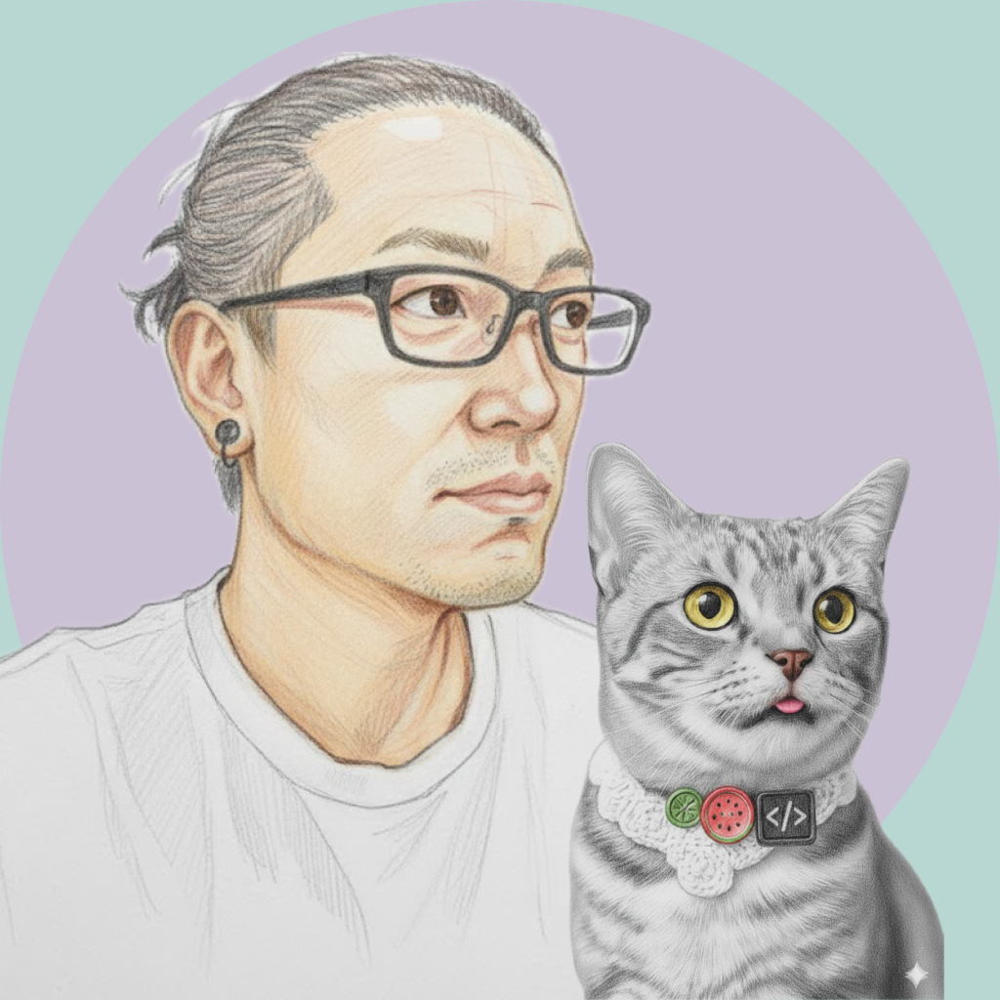
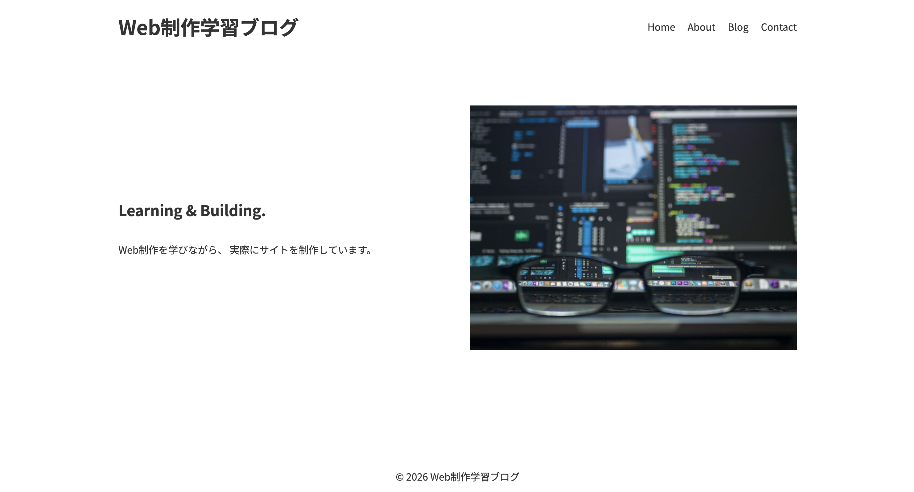
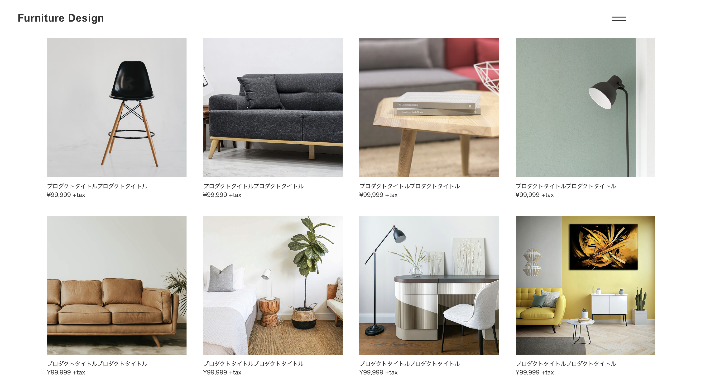
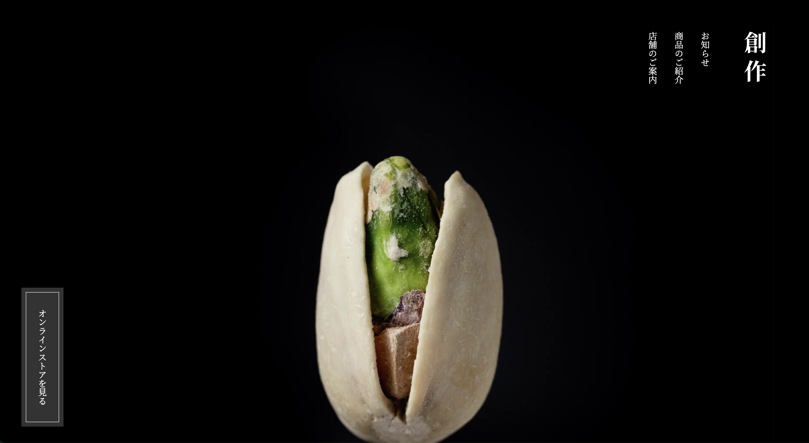

HTML / CSS
Progateおよび書籍を通して基礎を学習後、 コーディング練習サイトを活用し、 20件以上の模写・制作に取り組んできました。 制作物はGitHubに公開しています。
現在は職業訓練でも学習を続けており、 Flexboxやレスポンシブ対応を用いた サイト制作に取り組んでいます。
Satoru Tanaka
職業訓練と独学を通して Web制作を学んでいます

はじめまして。ご覧いただきありがとうございます。
現在は職業訓練と独学を通して、Web制作を学んでいます。
以前は電気工事士として現場仕事に携わり、その後は食品製造工場にて、 製造ライン管理や設備メンテナンス業務を行っていました。
機械の構造を理解し、不具合を一つずつ改善していくような、 地道に積み上げる仕事を長く続けてきました。
障害によって身体を使う仕事を続けることが難しくなった後も、 「何かを作る仕事」への思いは変わりませんでした。
そんな中で出会ったのが、Web制作、そしてコーディングの世界です。
HTMLやCSSを使って構造を組み立て、細部を調整しながら完成へ近づけていく作業には、 これまで現場で培ってきた職人気質との共通点を感じています。
デザインやUI/UXへの理解も深めながら、その中でも特に 「デザインを正確に形へ落とし込む力」を大切にし、 コーディングを軸にしたWeb制作を目指しています。
また、AIによるコード生成が進化していく時代だからこそ、 コードを理解し、自分自身で良し悪しを判断できる力を大切にしています。
基礎を疎かにせず、仕組みを理解しながら学び続けることを意識しています。
未経験からのスタートではありますが、 日々学習と制作を継続しています。
これまで培ってきた誠実さと継続力を武器に、 ひとつひとつ丁寧に制作へ向き合っていきたいと考えています。
Progateおよび書籍を通して基礎を学習後、 コーディング練習サイトを活用し、 20件以上の模写・制作に取り組んできました。 制作物はGitHubに公開しています。
現在は職業訓練でも学習を続けており、 Flexboxやレスポンシブ対応を用いた サイト制作に取り組んでいます。
Progateおよび書籍を通して基礎を学習しました。
簡単な動的機能の実装やコードの理解を中心に、 Web制作に必要な知識の習得に取り組んでいます。
職業訓練にて基礎操作を学習しました。
書籍も活用しながら、 画像編集やバナー制作などの 基礎的なデザインスキルを学んでいます。
独学および職業訓練を通して基礎を学習しました。
YouTube教材を活用しながら操作方法を学び、 職業訓練ではWeb制作に必要な 基本的な活用方法を学習しています。
独学でWordPressの学習を行いました。
ローカル環境を構築し、 Lightningテーマを用いたサイト制作を通して、 基本操作や仕組みについて学習しています。

HTML / CSS / JavaScript
看護師・元美容師によるエンゼルケアと お見取り伴走サービスをテーマにしたオリジナルの架空LPです。 落ち着いた配色や余白設計を意識しながら、 安心感の伝わるデザインを目指して制作しました。

HTML / CSS
模写ではなく、レイアウトやデザインを 一から考えて制作したオリジナルサイトです。 レスポンシブ対応を行いながら、 設計から実装まで取り組みました。

HTML / CSS / JavaScript / jQuery
家具ECサイトを再現したコーディング作品です。 複数ページ構成やレスポンシブ対応に加え、 jQueryを用いたハンバーガーメニューを実装しました。

HTML / CSS / JavaScript / jQuery
フィットネスジムサイトを再現した コーディング作品です。 デザインカンプをもとに制作し、 ハンバーガーメニューやパララックス背景を実装しました。

HTML / CSS
和風テイストのストアサイトを再現した コーディング作品です。 writing-modeを用いた縦書きレイアウトや、 レスポンシブ対応を実装しました。

HTML / CSS
コーポレートサイトを再現した コーディング作品です。 positionを用いたレイアウトや 疑似要素による装飾表現を学習しました。
現在、職業訓練と独学を通して、 Web制作を学びながら、コーディングを中心に制作を続けています。
HTML/CSSをはじめとした基礎技術を学び、 日々アウトプットを積み重ねています。
電気工事や設備メンテナンスなど、 現場仕事で培ってきた継続力と丁寧さを大切にしながら、 一つひとつの制作へ誠実に向き合っています。
未経験からの挑戦ではありますが、 学習と制作を継続しながら、 着実に技術を積み上げていくことを心がけています。
お問い合わせは下記よりお願いいたします。
Gmail： satoru.tanaka.web@gmail.com
GitHub： GitHub Profile